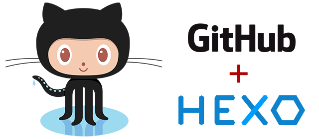

前言
此篇文章将指导你使用GitHub Pages与Hexo搭建个人独立博客。

为什么选择 GitHub Pages + Hexo
如今，自媒体行业繁荣，人人都可以在互联网上表达自己的观点与想法。能写东西的地方非常之多（例如：微信公众号、今日头条、知乎专栏…），这些大平台往往可以提供足够的流量与曝光率，那么我们还要选择 GitHub Pages + Hexo 手动搭建个人博客写作平台呢？
基于我个人的一些理解，总结了以下几点。
数据可控
支持 Markdown 格式书写
自定义博客主题，可扩展性强
适用 Git WorkFlow, 与 GitHub 完美契合
彰显 Geek 精神
…
环境搭建
首先，我们需要在本机搭建起 GitHub Pages 与 Hexo 的运行环境，后续任何操作步骤都需要以存在运行环境为前提。
搭建Git环境
前往Git官方网站, 根据你使用的计算机架构，选择系统下载安装Git，按照提示安装即可。如果Git官网无法访问，挂上代理工具尝试。
Git 官方网站: https://git-scm.com/
部分操作系统可以使用包管理工具一键安装，比如：我个人使用的是 CentOS Linux 操作系统，使用yum命令即可安装。
搭建Node.js环境
前往 Node.js 官方网站, 根据主机的架构与系统，选择合适的版本下载并安装 Node.js 。既可以选择直接下载预编译的二进制包，也可以下载源码包手动编译安装（需要编译环境）。
Node.js 官方网站：https://nodejs.org/
检验安装
添加 Git 与 Node.js 安装路径到PATH环境变量中，打开系统命令行工具（Windows下CMD），执行以下命令检验安装。如果正常打印出软件版本号，说明安装成功，没有问题。
$ git --version
...
$ node --version
...
$ npm --version
...
注：检验 Git 工具与 Node.js 环境
安装 Hexo 博客框架
A fast, simple & powerful blog framework, powered by Node.js.
Hexo 是一个快速、简洁且高效的博客框架，使用Node.js写成，支持 Markdown 格式。Hexo 博客框架的安装过程非常简便。使用一条npm命令即可安装。
$ npm install hexo-cli -g
...
注：> 使用 NPM 包管理器全局安装 Hexo 命令行工具
安装完成后，执行命令检视，如果正确打印出 Hexo 软件版本号，则说明安装成功。
$ hexo --version
...
注：检验 Hexo 博客框架
Hexo 使用初步
项目初始化
将运行环境、相关工具框架都安装完毕之后，我们就可以上手使用 Hexo 博客框架了。
Hexo 使用第一步，便是需要初始化一个博客项目，执行初始化命令 Hexo 脚手架便会帮助我们初始化好一个默认的博客项目。
$ hexo init <folder>
...
$ cd <folder>
$ npm install
...
注：Hexo 初始化博客项目
博客新建初始化完成后，其目录结构如下：
.
├── _config.yml
├── package.json
├── scaffolds
├── source
| ├── _drafts
| └── _posts
└── themes
注：Hexo 初始化博客目录树
博客预览
想要预览博客，可以执行命令启动预览 Web 服务器，默认情况下访问地址为：http://localhost:4000/，端口号可手动指定。打开浏览器，键入访问地址就可以看到生成博客的样子了。
$ hexo server
...
注：启动 Hexo 博客预览 Web 服务器
Hexo 更多
更多关于 Hexo 的使用方式，我们可以查阅官方文档。
Hexo Docs：https://hexo.io/docs/
Hexo 中文文档：https://hexo.io/zh-cn/docs/
GitHub Pages
Websites for you and your projects.
GitHub Pages 是 GitHub 为广大开发者们提供的一个静态站点托管服务。
GitHub 为每个 GitHub Pages 仓库项目提供 1GB 仓库容量（超过会有限制）。
每月 100GB 带宽流量与 10 万次请求。
开发者项目与展示站点紧密相关。
GitHub Pages 官方教程写得简单明了，直接参看操作即可。
需要注意的是，GitHub Pages 只能托管静态网站，不支持动态 Web 。
为了节省资源，如果个人博客配有大量高清图片资源，建议使用 CDN 图床。
GitHub Pages 官方教程：https://pages.github.com/
发布个人博客到 GitHub Pages
我们已经在 GitHub 上建立了自己域名的 GitHub Pages 仓库：yourname.github.io，也在本地跑起了我们的 Hexo 静态博客站：http://localhost:4000/。最后一个步骤，便是将本地的博客站点托管到 GitHub Pages 上。
由于 GitHub Pages 不支持动态网站，我们需要生成静态网页文件再上传到 GitHub 中，Hexo 框架提供了快捷指令可以轻松完成这项任务。
$ hexo generate
...
注：Hexo 生成静态文件
执行上述命令，Hexo 将 Markdown 文件编译生成静态网页文件，放置在public目录下。将该目录下的静态网页文件推送至 GitHub Pages 仓库（即：yourname.github.io），提交推送即可。
$ git remote add origin <your-github-pages-repo>
$ git add --all
$ git commit
$ git push origin master
注：Git 推送静态网页文件
我们可以在 Hexo 配置文件中指定相应的部署选项，再安装hexo-deployer-git插件，让 Hexo 根据配置自动推送部署，非常方便。更多配置选项，可以参看官方文档。
# Deployment
## Docs: https://hexo.io/docs/deployment.html
deploy:
type: git
repo: https://github.com/<username>/<username.github.io>
branch: master
注：添加
_config.yml部署配置
$ npm install hexo-deployer-git --save
...
注：安装
hexo-deployer-git插件
推送后，稍等片刻，等待 GitHub 部署完成，访问https://yourname.github.io域名，就可以看到我们搭好的个人博客了。
备份建议
毫无疑问，博客的博文资料是最珍贵的，框架可以换，但博文资料我们需要采用某些措施妥善的备份起来。
给大家的建议是，使用GitHub备份博文资料。
由于我们上传到GitHub Pages 仓库上的是借助Hexo生成器生成的静态网页文件，我们不希望备份它们，这对日后博客内容的移植，修改造成不便。
我们需要将本地的Markdown文件备份下来，这才是我们需要做的。
Hexo本地目录下source文件夹存放着我们写的博文内容，我们只需要使用GitHub将这些内容备份起来。
这里子恒喵使用了Git branch分支功能来保存博文资料，没有新建出一个仓库。
$ git clone <your-remote-github-repo.git>
$ cd <folder>
$ git branch source
$ git checkout source
$ rm -rf ./[^.]*
$ cp -r -v <hexo/source> ./
$ git add --all
$ git commit
$ git push origin source
虽然Git branch分支功能并不是为备份数据而生的，但是在这个特殊场景下，利用分支功能却非常合适。master分支存放静态网页文件，source分支存放Markdown文件。备份工作完满完成。
参考资料
GitHub Pages 简介：https://help.github.com/articles/what-is-github-pages/
Git 官方网站：https://git-scm.com/
Node.js 官方网站：https://nodejs.org/
Hexo 官方网站：https://hexo.io/